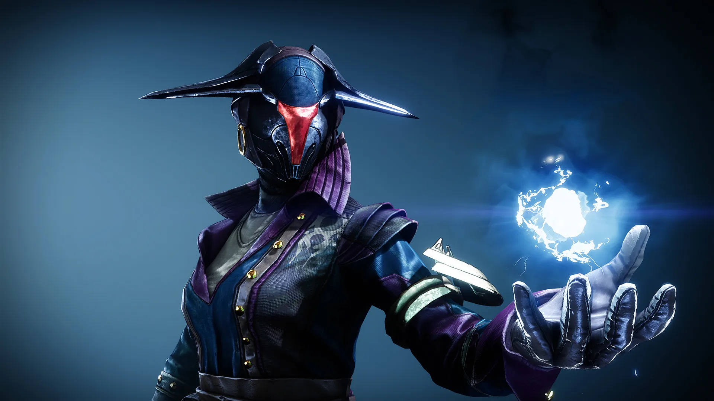
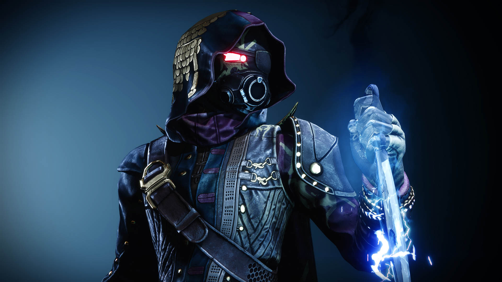
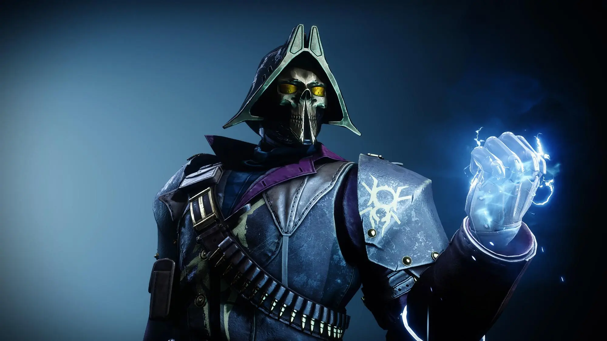

Arco
Arcano - Condutor da Tempestade
O primeiro dia em que eu invoquei a tempestade foi o fim. O fim de uma jornada, o cume de uma montanha. Mas, quando descemos a montanha, não a levamos conosco. Como eu conservaria a revelação profunda do olho da tempestade que permitiu minha conexão direta com o furacão?
Paz tempestuosa. A calmaria e a tempestade. Por onde começo?
Não faltavam dúvidas na minha cabeça enquanto eu tentava pôr meus pensamentos em prática. O fedor pungente da radiolária me lembrou que o treinamento havia acabado. Será que eu estava pronto para isso? Será que eu tinha escolha?
Abatido, ensaguentado, olhei nos rostos vazios dos meus inimigos. Eles eram apavorantes e me tomaram muita coisa. Mas eu vi aquilo que jaz imóvel em meio à cacofonia.
Coragem. A coragem de enfrentar a corrente, de proclamar a paz diante da violência. Coragem é o único chamado ao qual a tempestade atenderá.
Ela não pode me ignorar.
Trovões ribombam e raios lampejam. O vento sopra e a chuva cai. Meus inimigos já não estão mais aqui. Mas a paz... a paz nunca me deixou.
Caçador - Acrobata Voltaico
"Se não foi um lampejo, uma explosão? Uma fenda nos céus? O que abriu o caminho que hoje percorremos?"
Toda. Vez. Toda vez que nos encontramos para uma missão, surge um debate metafísico. Não estávamos só trocando umas ideias, compartilhando técnicas de amolar lâminas? Como assim já voltamos à filosofia de boteco?
Bom, cá estou eu...
"Energia de arco não é tão dramática", contestei enquanto me levantava. " Vocês também sentem, não sentem? Esse formigamento sussurrante que passa por todas as coisas."
"Eu acho que parece mais um zumbido". O Desperto corpulento terminou de limpar os dentes a tempo de dar sua opnião. "Como se fosse um monte de abelhas vindo de bem longe"
Eu dei uma volta na fogueira, sentindo cada vez mais gratidão pela distração, já que não havia nada por perto num raio de vários quilômetros. Sempre fico inquieto quando nos reunimos para uma missão.
"Mas quando senti as faíscas dançando nos meus dedos," respondeu primeiro o Caçador, "eu podia jurar que elas eram resultado de uma grande ocorrência"
A quase duzentos quilômetros dali, uma trovoada lampejou como se respondesse o Caçador.
Então, eu entendi. Entendi por que não conseguimos embarcar em uma mísera missão sem falar de filosofia. É pelo mesmo motivo de eu não conseguir relaxar. Toda vez que nos reunimos para uma missão, há uma sensação passa entre nós como uma corrente elétrica: expectativa.
Titan - Combatente
"Da pra atirar logo neles?!"
Mas é claro que um Caçador diria isso, como se eu não tivesse uma alternativa perfeitamente viável.
Raios de energia explodem ao nosso redor enquanto discutimos atrás da nossa cobertura.
"Olha, em 20 segundos eu faço a limpa por aqui"
"E se você nãop conseguir? Ou você acha que a gente vai simplesmente se atirar no meio da luta para te salvar?"
Típico dos Arcanos, sempre procurando a saída mais segura.
"Você não entende", eu resmungo.
"O quê?", gritam eles em frutação uníssona em meio ao barulho constante do campo de batalha.
"Deixa eu adivinhar,", ironiza o Caçador, "seus punhos não precisam de recarga"
Todo mundo ri. Hora de acabar com a graça.
"O espaço em que a bala viaja é uma fenda de desconexão que não pode ser transposto por uma arma. Nenhum tipo de poder de fogo tem a capacidade de assumir a responsabilidade do impacto pessoal." Eles reviram os olhos mais eu continuo.
"Não há nenhuma distância entre meu punho e meu alvo, cativado pelo dom das faíscas. É bem pessoal, uma última chance de conexão."
Silêncio
"Você quer se conectar com a Colmeia?"
Certo, chega de discutir. Meus punhos podem falar por mim.